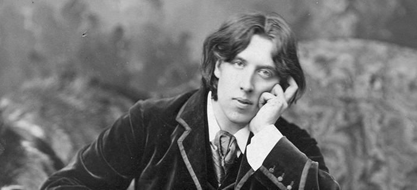

Oscar Wilde w anegdotach
Książka Oscar Wilde o sztuce i życiu jest próbą przybliżenia refleksji Wilde’a o sztuce i życiu, ukazania ich aktualności, głębi, uniwersalnej wartości.
W pierwszej części zostały wybrane i uporządkowane tematycznie jego wypowiedzi na temat sztuki i życia (podano je w języku angielskim i polskim tłumaczeniu). Część druga to omówienie problematyki zawartej w tych sądach. Appendix zawiera m.in. szczegółowe kalendarium, informacje dotyczące adaptacji utworów oraz opinie znanych postaci odnoszące się do Wilde’a bądź jego twórczości.
Kontakt i zamówienia: mywildbook@gmail.com

Wydawnictwo: WILDBOOK
Rok wydania: 2010
Oprawa: twarda
Format: 205 × 145
Liczba stron: 224
Cena: 42 zł
ISBN: 978-83-930701-0-7
WOKÓŁ BIOGRAFII

Oscar Wilde (1882), fot. Napoleon Sarony, źródło: Wikimedia Commons (modyfikacja własna)
„Jestem jedynym człowiekiem na świecie, którego chciałbym poznać na wskroś, nie widzę jednak na razie żadnej po temu możliwości”.

Nazywał się Oscar Fingal O’Flahertie Willis Wilde. Tłumaczył, że „nie używa trzech ostatnich imion, gdyż kilka imion jest użytecznych, gdy człowiek jest nieznany. Gdy staje się sławny, odrzuca je – jak sternik balonu, wznosząc się w górę, zrzuca niepotrzebny balast. Wkrótce – kontynuował – odrzucę jeszcze jeden człon i będę znany po prostu jako Wilde albo Oscar. A poza tym… – dodał – to drożej kosztuje, gdy się daje ogłoszenie”.
Nie był miłośnikiem uprawiania sportu. Mimo swej wyjątkowej siły, nienawidził walki, fizycznej przemocy. Nie grał też w krykieta. „Nigdy nie lubiłem kopać ani być kopanym” – wyznał. Innym razem oświadczył: „Przyznaję, że nie biorę udziału w żadnej grze na świeżym powietrzu, z wyjątkiem... tak... z wyjątkiem domina. Grywałem czasami w domino na tarasie kawiarni we Francji”.
„Ach, gdybym tylko dorósł do mojej błękitnej porcelany” – powiedział na jednym z przyjęć w Oksfordzie. Stało się to powodem licznych komentarzy, a pewien ksiądz w kościele uniwersyteckim w Oksfordzie stwierdził, że jeśli młody człowiek oświadczy, że trudno mu dorosnąć do poziomu błękitnej porcelany, świadczy to o pewnej formie pogaństwa i obowiązkiem jest z nią walczyć. Wilde odniósł się do tej wypowiedzi podczas swoich odczytów w Ameryce: „Byłem ubawiony typowo angielskim sposobem, w jaki moja myśl została mylnie zrozumiana”.
Krążyły legendy o jego ekstrawagancji. Jako dziwaka i estetę przedstawiano go nie tylko w karykaturach. Opera komiczna Patience, or Bunthorne's Bride, z muzyką Arthura Sullivana i librettem Williama Gilberta, której premiera odbyła się w 1881 roku, wyśmiewała Wilde’a, jakoby spacerował po Piccadilly z makiem bądź lilią w dłoni. Wilde skomentował ten przycinek: „Na to mógłby się zdobyć każdy. Ja dokonałem czegoś o wiele trudniejszego: wmówiłem całemu światu, że to zrobiłem”.
Podczas studiów w Oksfordzie spóźnił się na egzamin z teologii. Jeden z egzaminatorów, kanonik William Archibald Spooner, zapytał go, jaka jest tego przyczyna. „Proszę mi wybaczyć, nie mam doświadczenia w zdawaniu takich egzaminów” – odpowiedział. Egzaminatorzy, oburzeni taką nonszalancją, polecili mu przepisać 27 rozdział Dziejów Apostolskich. Pisał pilnie, więc powiedzieli, aby zakończył. Po pół godzinie zobaczyli, że wciąż pisze. „Czy nie usłyszał pan, panie Wilde, co powiedzieliśmy? Może pan już nie przepisywać” – rzekł Spooner. „Owszem, słyszałem – odpowiedział – ale tak mnie to zainteresowało, że nie mogłem się oderwać. Jest tam mowa o człowieku imieniem Paweł, który wybrał się w podróż i rozpętała się gwałtowna burza, więc ogarnął mnie lęk, że utonie. Gdy się dowiedziałem, że się uratował, pomyślałem, że powiem księdzu o tym”. Wilde oblał egzamin.
Walter Pater wygłosił odczyt o Prosperze Mérimée. Jak zwykle mówił cichym, monotonnym głosem. Po odczycie zagadnął kilku znajomych, wśród których był Wilde: „Mam nadzieję, że wszyscy mnie słyszeli?”. „Podsłuchiwaliśmy pana” – odrzekł Wilde.
Wilde wszedł do kwiaciarni i poprosił sprzedawcę, by wyjął pierwiosnki z wystawy. „Z przyjemnością, proszę pana. Ile pan sobie życzy?”. Wilde odparł: „Mnie są one niepotrzebne. Prosiłem tylko o usunięcie ich z okna, bo wydaje mi się, że są zmęczone”.
Przed premierą Wachlarza lady Windermere Wilde poprosił swojego znajomego Walforda Grahama Robertsona o zamówienie w kwiaciarni zielonych goździków, aby jak najwięcej ludzi miało na premierze zielone goździki w butonierce. Kiedy zdziwiony Robertson zapytał, skąd ten pomysł, Wilde odparł: „Ludzie będą się dziwić i wytrzeszczać oczy. Potem rozejrzą się i zobaczą podobne plamy mistycznej zieleni. Zaintryguje ich, co to za tajemniczy symbol, co to może znaczyć”. „A cóż to będzie znaczyć?” – spytał Robertson. „Absolutnie nic i nikt się tego nie domyśli”.
W 1893 roku w teatrze Haymarket wystawiono po raz pierwszy Kobietę bez znaczenia. Sztuka odniosła sukces. Oklaskom towarzyszyły okrzyki: „Autor!, Autor!”. Wilde wstał i ze swojej loży, gdzie wszyscy mogli go dostrzec, oznajmił: „Panie i panowie, z przykrością muszę państwu powiedzieć, że pana Oscara Wilde’a nie ma na tej sali”.
Francuski aktor Benoit Constant Coquelin zaprosił Wilde’a, aby go odwiedził. Oznajmił, że jest zawsze w domu około dziewiątej. „Doskonale. Przyjdę zatem któregoś z najbliższych wieczorów” – odparł Wilde. Coquelin wyjaśnił: „Ale, Monsieur, miałem na myśli dziewiątą rano”. „Drogi Panie – rzekł Wilde – jest pan naprawdę niezwykłym człowiekiem. We mnie tkwi większy bourgeois niż w panu. Kładę się do łóżka zawsze o czwartej albo piątej. Nie potrafiłbym nie spać tak długo”.
W rozmowie z Richardem Le Gallienne’em, po opublikowaniu The Religion of a Literary Man, Wilde skarżył się, że został źle potraktowany w tej książce. Zdziwiony Gallienne odparł: „Z pewnością jej nie czytałeś, w przeciwnym razie nie mówiłbyś, że cię źle potraktowałem”. „Przeczytałem ją od deski do deski i uważam, że potraktowałeś mnie haniebnie i brutalnie. Nigdy bym się tego po tobie nie spodziewał, byliśmy serdecznymi przyjaciółmi!”. Gallienne próbował wyjaśnić nieporozumienie: „Potraktowałem cię brutalnie? Przyśniło ci się chyba! Nawet o tobie tam nie wspomniałem”. „O to mi właśnie chodzi” – wyjaśnił Wilde.
Był wielbicielem Balzaca. W Paryżu upodobnił się do niego strojem i sposobem bycia. Próbował też – jak Balzac – systematycznie, codziennie pracować. Niestety wkrótce oznajmił: „Na to, aby być sumiennym i punktualnym, niestety brakuje mi czasu”.
Robert Sherard złożył Wilde’owi wizytę w Paryżu w hotelu Voltaire. Zwrócił uwagę na piękny widok na Luwr i Sekwanę. „Ach – odparł Wilde – to dla wszystkich zupełnie nieistotne… z wyjątkiem właściciela, który oczywiście uwzględnia ten fakt w rachunku. Dżentelmen nigdy nie wygląda przez okno”.
Wilde był miłośnikiem dobrej kuchni. O kuchni brytyjskiej nie wyrażał się zbyt pochlebnie, stwierdził między innymi, że „brytyjska kucharka to kobieta szalona, zasługuje na to, by za swoje winy zmieniła się w słup soli, której nie wie, jak i kiedy używać”.
Adwokat Edward Carson na procesie zapytał go, czy pija szampana. „Tak – odparł Wilde – szampan z lodu to mój ulubiony napój, wbrew surowym zakazom doktora”. „Nic mnie nie obchodzą zakazy pańskiego doktora” – rzekł Carson. „Mnie również” – zripostował Wilde.
Pewnego dnia jakiś mężczyzna zaczepił Wilde’a na progu jego domu przy Tite Street. „Przyszedłem w sprawie podatków” – rzekł. „Podatków! A dlaczego ja miałbym płacić podatki?” – zapytał Wilde. Zdziwiony mężczyzna próbował wyjaśnić: „Ależ proszę pana, pan jest tu, zdaje się, gospodarzem, prawda? Pan tu mieszka, sypia tutaj”. „Tak, ale widzi pan, ja tak źle sypiam” – odparł Wilde.
Pod koniec lat 80. i na początku 90. był ulubieńcem salonów, przyjęcie z jego udziałem musiało być udane. Na zaproszeniach dodawano nawet adnotację, że będzie obecny Pan Oscar Wilde. Jednemu z lordów odpisał: „Niestety nie będę mógł przybyć z racji przyjętego później zaproszenia”.
Na przyjęciu Victor Hugo rozwodził się na temat szlachetnej rasy psów. Rosyjska księżniczka spostrzegła, że Wilde’a to zdenerwowało i zapytała o przyczynę. „Nie rozumiem, dlaczego na przykład homary nie są wartościowsze od psów: są smaczniejsze, spokojne, znają tajemnice morza, nie mają pcheł i nigdy nie szczekają”.
Na pytanie o rolę kobiety w życiu mężczyzny odpowiedział: „Pragną inspirować nas do tworzenia arcydzieł, ale przeszkadzają w ich wykonaniu”.
Żebrak poprosił Wilde’a o jałmużnę, tłumacząc, że nie ma pracy i chleba. „Praca! A po cóż chcesz pracować? Chleb? Dlaczego masz jeść chleb?” – spytał Wilde. Po chwili dodał: „Gdybyś powiedział, że nie masz pracy, ale że ani ci się śni pracować, że masz chleba w bród, ale nie chcesz jeść chleba, to dałbym ci dwa i pół szylinga... A teraz dam ci pół korony”. [pół korony to dwa i pół szylinga]
Wilde gloryfikował młodość, twierdził nawet, że to „jedyne dobro godne posiadania”. Pewnemu młodemu pisarzowi powiedział: „Mieć dwadzieścia jeden lat to swego rodzaju dowód geniuszu”. I dodał: „Nie ma rzeczy, której bym nie uczynił, aby odzyskać młodość, nie ma takiej rzeczy... z wyjątkiem zażywania ruchu, wczesnego wstawania lub wzięcia na siebie obowiązków pożytecznego członka społeczeństwa”.
W jednej z angielskich gazet napisano, że podczas pobytu w Ameryce w słoneczny dzień przechadzał się z parasolem i w nieprzemakalnym płaszczu, gdyż twierdził, że „w Londynie pada dziś deszcz”. Robert Sherard zapytał go, czy przytoczona przez prasę historia jest prawdziwa. „Fałszywa informacja” – odparł Wilde. „Tak myślałem” – odetchnął Sherard. „Odkryłem później – kontynuował Wilde – że w Londynie tego dnia była prześliczna pogoda... a więc mój płaszcz nieprzemakalny i parasol okazały się całkiem zbyteczne”.
Na przyjęciach panie opuszczały pokój jadalny wcześniej, a panowie pozostawali, by zapalić papierosa. Pewnego razu damy tak były zachwycone konwersacją Wilde’a, że pozostały dłużej niż zwykle. W pewnym momencie jedna z nich odezwała się do niego: „Czy mógłby Pan zgasić tę lampę naftową? Dymi”. „Szczęśliwa lampa” – szepnął Wilde.
Kiedyś przysłuchiwał się rozmowie, podczas której tłumaczono młodemu człowiekowi, że powinien stopniowo robić karierę, zaczynając od najniższego szczebla. „Nie – wtrącił Wilde – niech pan zacznie od samego szczytu i tam zostanie”.
Spotkanego znajomego, któremu się nie ukłonił, przeprosił: „Nie poznałem pana, bardzo się zmieniłem”.
Koniec lat 80., a zwłaszcza początek 90. przyniosły Wilde’owi sławę i pieniądze. Był znany nie tylko w Anglii, ale wielką popularnością cieszył się też we Francji. W gazetach pisano o nim nieustannie, zapraszano na przyjęcia. W 1995 roku Henri de Toulouse-Lautrec namalował jego portret pastelami. Wcześniej, bo w 1891 roku w Paryżu, William Rothenstein sportretował Wilde’a w czerwonej kamizelce na złotym tle. Wilde dowcipnie skomentował to dzieło: „To śliczny pejzaż, mój drogi Will. Gdy ci będę pozował następnym razem, musisz zrobić mój prawdziwy portret”. Mimo tej niepochlebnej oceny kupił portret (w 1897 roku skradziono go w Neapolu).
„Jakąż okropną mamy pogodę” – zagadnęła pewna dama, którą Wilde prowadził do stołu na jednym z przyjęć. „Tak, ale gdyby nie było śniegu, jakże moglibyśmy wierzyć w nieśmiertelność duszy?” – odparł Wilde. Zdziwiona spojrzała na niego i rzekła: „To ciekawe zagadnienie, ale proszę mi dokładnie wytłumaczyć, co pan chce przez to powiedzieć”. „Nie mam pojęcia” – oświadczył.
W 1893 roku Wilde z synem Cyrylem przebywali w Babbacombe. Tutaj przyjechał Alfred Douglas ze swoim korepetytorem Campbellem Dodgsonem (późniejszy kustosz w British Museum),
który miał przygotować Douglasa do egzaminu w Oksfordzie. Wilde stworzył swoistą parodię szkoły, w której on był dyrektorem, a Dodgson wicedyrektorem. Dziękując Dodgsonowi, napisał:
„Prowadziłem instytucję według dawnych zasad i naprawdę uważam, że udało mi się połączyć zalety szkoły publicznej i prywatnego domu wariatów, co – jak Pan z pewnością wie – było moim zamiarem”.
Potwierdza to opracowany przez Wilde’a Regulamin:
„9.30 – Herbata dla dyrekcji i chłopców
10.30 – Śniadanie
11.30–12.30 – Praca
12.30 – Sherry i biszkopty dla dyrekcji i chłopców (wicedyrektor ma tu zastrzeżenia)
12.40–13.30 – Praca
13.30 – Lunch
14.30–16.30 – Obowiązkowa zabawa w chowanego dla dyrektora szkoły
17.00 – Herbata dla dyrekcji, brandy z sodą (nie przekraczać siedmiu) dla chłopców
18.00–19.00 – Praca
19.30 – Kolacja z obowiązkowym szampanem
20.30–24.00 – Karty (do punktów za pięć gwinei)
24.00–1.30 – Obowiązkowa lektura w łóżku; każdy chłopiec, który zostanie przyłapany na łamaniu tej zasady, zostanie natychmiast obudzony”.
Jeden z amerykańskich dziennikarzy bardzo chciał, by opowiedział mu jakieś szczegóły z życia osobistego. „Bardzo chciałbym mieć życie osobiste” – odparł Wilde.
W 1893 roku pisał do krytyka i tłumacza Alexandra Teixeira de Mattosa: „Widzę pewne trudności z umieszczeniem mojego popiersia w foyer Haymarket. W ciągu dnia tłoczy się tu drobnomieszczaństwo, które mogłoby je potłuc, a wieczorem arystokracja, która mogłaby je ukraść, zaś ja akurat teraz nie mogę pozować, bo jutro jadę do Oksfordu”.
Przed procesem wielu przyjaciół próbowało nakłonić Wilde’a do wyjazdu z Anglii. Podczas antraktu – w teatrze St. James grano właśnie Bądźmy poważni na serio – George Alexander zapytał, czy posłucha jego rady. „Oczywiście... jeśli to będzie rada, którą zechcę przyjąć” – odrzekł Wilde. „Dlaczego nie wycofasz się z procesu i nie wyjedziesz za granicę?” – kontynuował Alexander. „Wszyscy chcą, żebym wyjechał za granicę. Byłem właśnie za granicą i wróciłem. Nie można wciąż wyjeżdżać, chyba że się jest misjonarzem albo, co na jedno wychodzi, komiwojażerem”.
W 1895 roku Wilde został aresztowany pod zarzutem „popełnienia poważnej obrazy moralności z licznymi osobami płci męskiej” i skazany na dwa lata więzienia i ciężkich robót. Przed wyjściem z więzienia w Reading naczelnik, major Nelson, poinformował go, że dwaj amerykańscy dziennikarze proponowali dużą sumę pieniędzy za opisanie tego, co tu przeżył. Wilde był wówczas bankrutem i bardzo potrzebował pieniędzy. Odparł: „Nie rozumiem, Panie naczelniku, jak można uczynić podobną propozycję dżentelmenowi. Moje cierpienie jako przedmiot transakcji handlowej – to poniżej mojej godności”.
18 maja 1897 roku został przeniesiony z więzienia Reading do Pentonville. W pociągu, w drodze do Pentonville, poprosił, aby mu pozwolono przeczytać gazetę. To było jednak zabronione. Poprosił wówczas, aby pozwolono mu czytać do góry nogami. „Na to wyrażono zgodę – wspominał Wilde – czytałem więc The Daily Chronicle do góry nogami i sprawiło mi to to taką przyjemność, jak nigdy wcześniej. To naprawdę jedyny sposób czytania gazet”.
19 maja 1897 roku opuścił więzienie. Czekał na niego Stewart Headlam (przewodniczący Bractwa Chrześcijańsko-Socjalistycznego, który poręczył za Wilde’a w czasie procesu). W jego domu w Londynie spotkał się z przyjaciółmi. Przyszli między innymi Ada i Ernest Leversonowie. Wilde zwrócił się do pani Leverson: „Sfinksie, jak to cudownie, że pani wiedziała dokładnie, jaki kapelusz należy włożyć o siódmej rano na powitanie przyjaciela, który wraca z dalekiej podróży!”.
Wydawca Leonard Smithers publikował książki, których – jak sam się reklamował – inni obawiali się drukować (często też teksty niecenzuralne). W lutym 1898 roku opublikował Balladę o więzieniu w Reading. Sześć wydań ukazało się w okresie 3 miesięcy, przy czym każde po 1000, 1200 egzemplarzy. Taktyka Smithersa spotkała się z ironicznym komentarzem Wilde’a: „Tak lubi skonfiskowane książki, iż sam konfiskuje własne”. Wcześniej, w maju 1898 roku, w liście do Leonarda Smithersa pisał: „Tak nawykłeś do wydawania książek w nakładzie ograniczonym do trzech egzemplarzy: jeden dla autora, jeden dla siebie, jeden dla policji, że doprawdy odnoszę wrażenie, jakbyś spadł poniżej swego poziomu, drukując sześciopensowe wydanie czegokolwiek. Może – jako że zależy mi na dotarciu do klas uboższych – dołączylibyśmy do każdego egzemplarza po kawałku mydła Maypole, które ponoć farbuje ludzi na urocze kolory, a ponadto oczyszcza”.
Po wyjściu z więzienia zamieszkał w małej miejscowości w Normandii – Berneval nad kanałem La Manche (koło Dieppe). Przybrał nazwisko Sebastian Melmoth: „Przydomek wybrałem – powiedział przyjacielowi – aby listonosz nie musiał się rumienić, kiedy przynosi przesyłki Oscarowi Wilde’owi”.
W 1900 roku, w ostatnich miesiącach życia, zaczął fotografować. Zajęcie to sprawiało mu wiele przyjemności. Pewnego razu swoje poszukiwania w tej dziedzinie skwitował stwierdzeniem: „krowy bardzo lubią się fotografować i tym różnią się od architektury, że się nie ruszają”.
W październiku 1900 roku odwiedziła go bratowa. Kiedy podczas lunchu podano szampana, Wilde rzekł: „Umieram tak, jak żyłem – ponad stan”.
Od jednego z polityków usłyszał, że w XIX wieku w Anglii wszystkiego dokonali ludzie, których nazwiska zaczynają się na „Mac”, a ci, których nazwiska zaczynają się na „O” – nie zrobili nic. Wilde odparł: „Zapomniał Pan, że w XIX wieku żyli O’Connell i O. Wilde”.